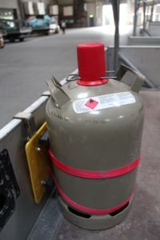
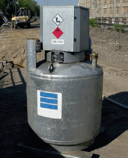
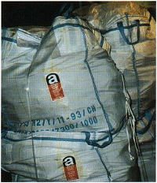

Gase sind Gefahrgüter der Klasse 2. Werden diese freigesetzt, besteht in geschlossenen Fahrzeugen Erstickungs- und/oder Explosionsgefahr. Daher dürfen Gase nur unter den folgenden Bedingungen transportiert werden. Die Ventile sind zu schließen und mit Schutzkappen oder Schutzkragen zu schützen. Die Flaschen sind zu sichern. Geschlossene Fahrzeuge müssen über eine ausreichende Lüftung verfügen. Diese besteht, wenn mindestens zwei 100 cm2 große Lüftungsöffnungen oben und unten am Laderaum angebracht sind. Nur in Ausnahmefällen (kurzfristiger Transport in Mietfahrzeugen) kann auf die Lüftung verzichtet werden. Dann ist an der Ladetür die Warnaufschrift „ACHTUNG KEINE BELÜFTUNG, VORSICHTIG ÖFFNEN“ anzubringen.
Nach dem Transport müssen die Gase umgehend aus dem Fahrzeug geladen werden.

Wird Diesel oder Benzin für das Betanken von Baustellenmaschinen transportiert, müssen die Behälter hierfür zugelassen sein. Allerdings dürfen Kraftstoffe weiterhin in Behältern ohne Bauartzulassung transportiert werden, wenn diese sich bewährt haben und der Kraftstoff für den Betrieb von Baumaschinen (baustellenbezogener Bedarf) verwendet wird. Für Tankcontainer kann die Kleinmengenregelung nicht angewendet werden. Um derartige Behälter unter den erleichterten Bedingungen der Kleinmengenregelung befördern zu dürfen, müssten diese als bauartgeprüfte Großpackmittel gekennzeichnet sein. Als Tankcontainer (TC) gekennzeichnete Baustellentankstellen bedürfen für die Kleinmengenbeförderung eine Ausnahmegenehmigung der Verkehrsbehörde. Kanister, Fässer und Großpackmittel für Dieselkraftstoff benötigen die Aufschrift "UN 1202 Dieselkraftstoff", den Gefahrzettel Nr. 3 und das Kennzeichen für umweltgefährdende Stoffe.

Asbesthaltige Produkte sind Gefahrgüter der Klasse 9. Wenn allerdings während des Transportes keine gefährlichen Mengen lungengängiger Asbestfasern freigesetzt werden können, brauchen die Vorschriften der GGVSEB nicht beachtet zu werden. Dies ist beispielsweise beim Transport folgender asbesthaltiger Abfälle der Fall:
a) Schwach gebundene Asbestprodukte, z.B. ausgebauter Spritzasbest, sind in Bindemitteln wie Zement, Asphalt oder Kunststoffe eingebettet.
b) Asbesthaltige Fertigprodukte wie Dach- oder Fassadenplatten werden in Folien oder abgedeckten Behältnissen, z.B. Big-Bags, transportiert.
Bezüglich der Entsorgung empfiehlt es sich, bei den Deponiebetreibern anzufragen, da die Annahmebedingungen sehr unterschiedlich sind.
Kartuschen für Bolzensetzgeräte sind Gefahrgüter der Klasse 1. Durch die Konstruktion der Kartuschen kann eine Explosion – abgesehen von der beabsichtigten Zündung im Bolzensetzgerät – nur durch einen Brand verursacht werden. Aufgrund dieses hohen Sicherheitsstandards müssen beim Transport der Kartuschen nur die üblichen Regelungen für Gefahrguttransporte beachtet werden. Das für explosive Stoffe geltende Zusammenladeverbot mit Gefahrgütern anderer Klassen gilt für diese Kartuschen nicht.